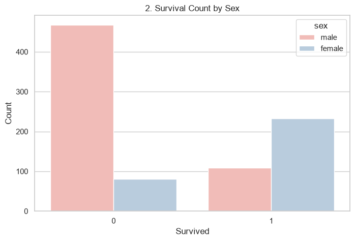
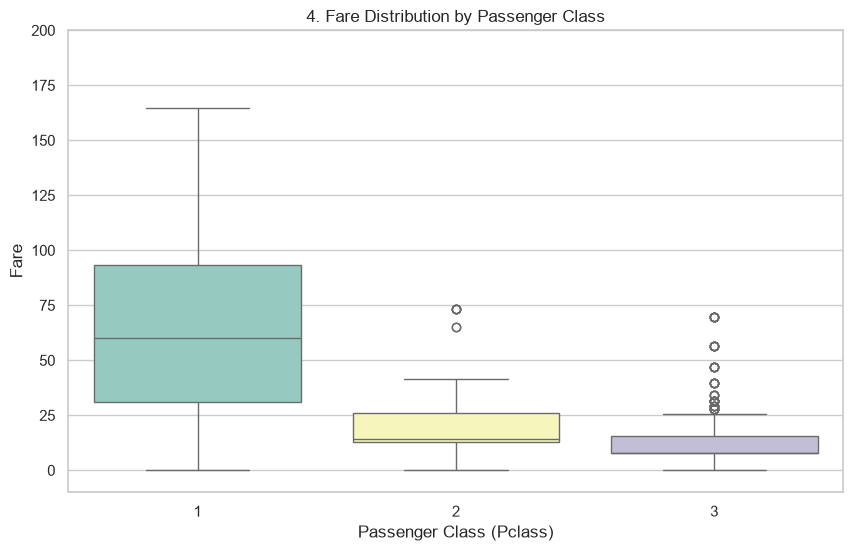

Project Overview
This repository contains a Python EDA pipeline for the Titanic dataset. It loads the data, cleans missing values, creates five meaningful visualizations, and stores the cleaned dataset into MongoDB.
To run locally:
pip install -r requirements.txtpython eda.pypython app.py
The local Flask dashboard is available at http://127.0.0.1:5000 when the app and MongoDB are running.
GitHub Pages live preview: this page.
Survival Count

Survival by Sex

Age Distribution

Fare by Class

Feature Correlations

Live Deployment Notes
This static page is hosted by GitHub Pages. The Flask backend and MongoDB integration work locally but are not available on this static site.
For a full live deployment with the Flask app and MongoDB, a backend hosting platform like Render or Railway is required.